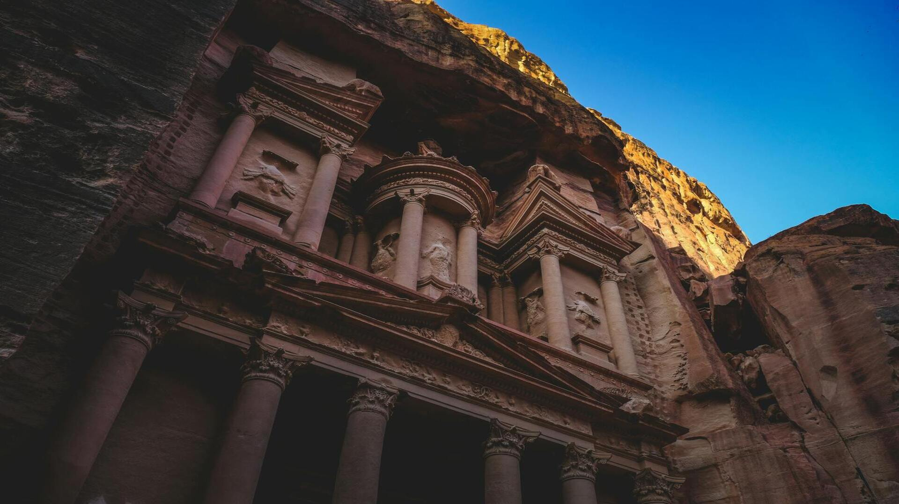
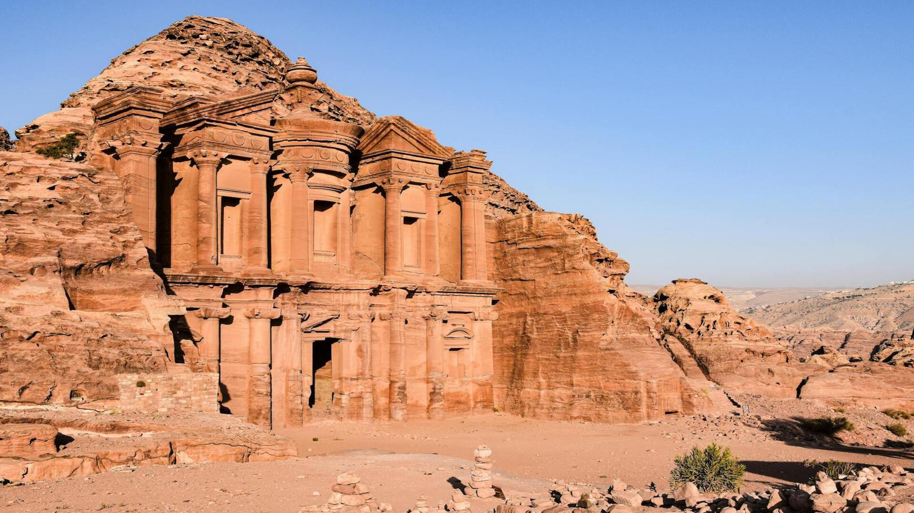
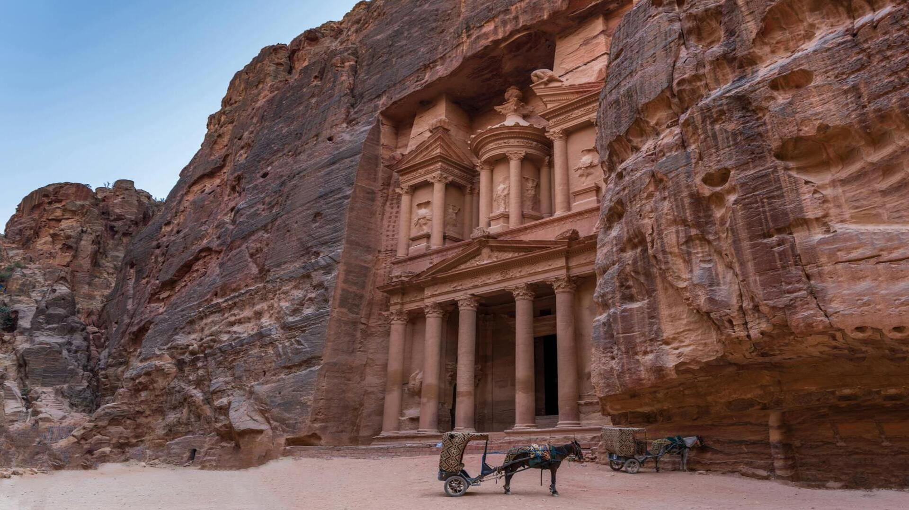

Petros miesto akropolis



Petra, dar vadinama „Rožiniu miestu“ dėl savo rausvų smiltainio uolų, buvo Nabatajos karalystės sostinė. Miestas buvo įkurtas maždaug IV a. pr. m. e. ir tapo svarbiu prekybos mazgu, jungiančiu Arabiją, Egiptą ir Viduržemio jūrą. Petra garsėja savo vandens valdymo sistema ir uolose išraižytais fasadais, tarp kurių yra garsusis Al-Chaznė (Iždas). Šis miestas ilgą laiką buvo paslėptas nuo Vakarų pasaulio akių, kol 1812 m. jį atrado šveicarų tyrinėtojas Johanas Ludvigas Burkhardtas.